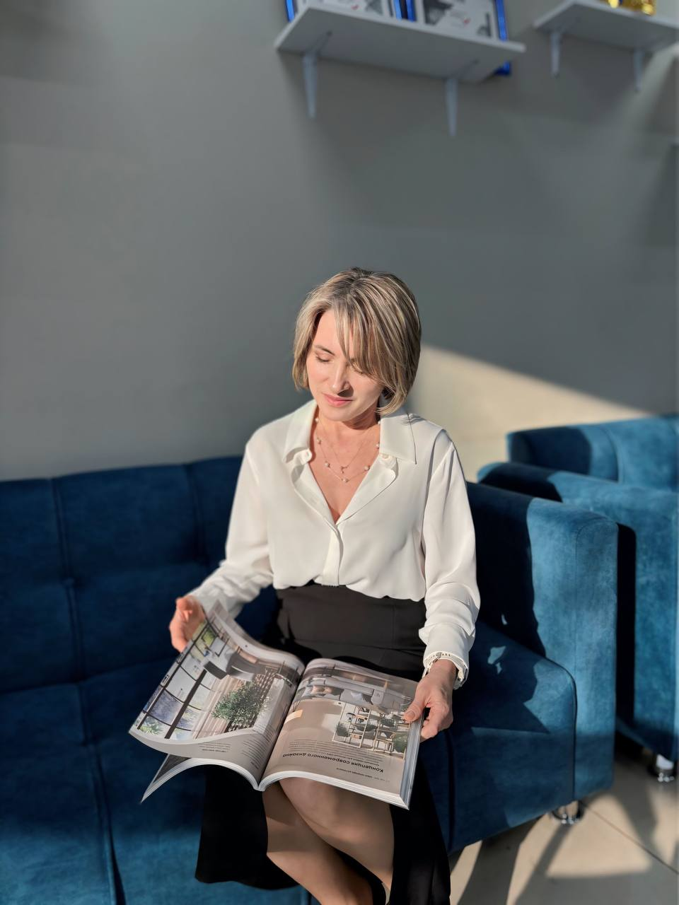
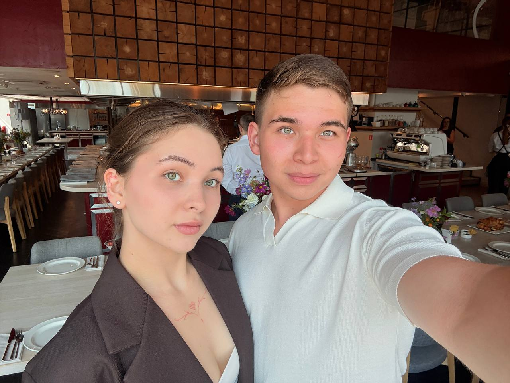
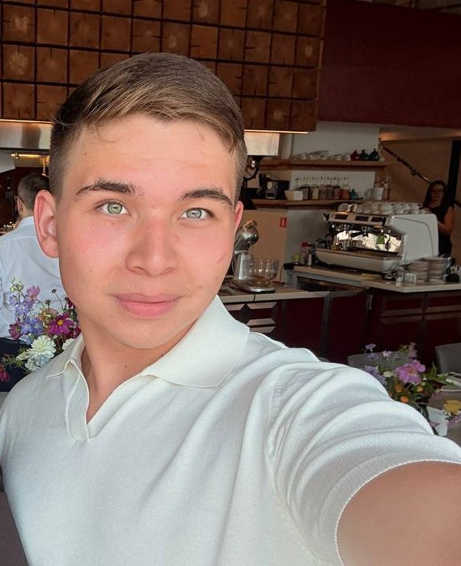
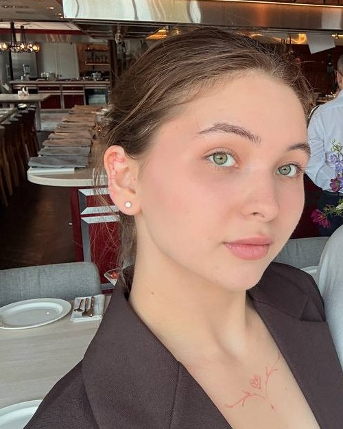
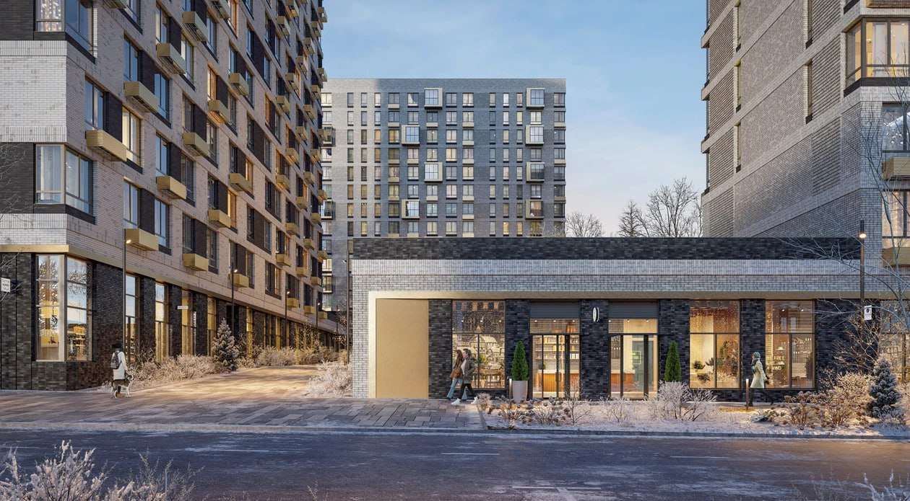
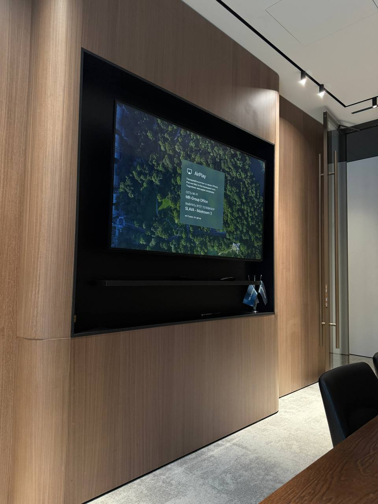

Персональная страница ↗Покупка · продажа · материалы о рынке
Лариса Шагеева
В канале есть публикации от первого лица и разборы тем недвижимости. Текущую специализацию, географию и форматы работы обсудить с Ларисой.
Открыть профиль ↗Рабочий прототип для обсуждения. Введите пароль, чтобы продолжить.
Помочь человеку выбрать следующий адрес — начиная с его задачи, привычек и того, что для него важно.
Три личных голоса, общий семейный канал и понятный маршрут к разговору.

У каждого уже есть собственный голос. Общая точка входа может связать людей и не стирать их индивидуальность.

Персональная страница ↗В канале есть публикации от первого лица и разборы тем недвижимости. Текущую специализацию, географию и форматы работы обсудить с Ларисой.
Открыть профиль ↗
Персональная страница ↗Семейный канал соединяет публикации о рынке, проектах и сделках. Его личные направления и перечень услуг нужно согласовать отдельно.
Открыть профиль ↗
Персональная страница ↗Руслана указана администратором общего канала. Собственное позиционирование, темы публикаций и клиентский маршрут можно сформулировать вместе.
Открыть профиль ↗Фотографии взяты из предоставленных публичных Telegram-публикаций; перед постоянным использованием согласовать с участниками.
Выбор складывается из объекта, района и сценария жизни. Контент может помогать задавать хорошие вопросы, а не торопить с ответом.


Это примеры визуальной подачи из архивов, не актуальные карточки объектов. Условия, адреса и доступность нужно проверять отдельно.
Рабочая схема для обсуждения. Она станет точнее после разговора о том, кто и с какими запросами работает.
Что человек ищет, почему сейчас и какие ограничения уже известны?
Какие варианты, условия и компромиссы стоит положить рядом?
Кто продолжает разговор и какое действие будет следующим?
Кто отвечает за запрос? Какие услуги действительно оказываются? В каком регионе? Эти ответы определят содержание сайта.
Обсудить маршрут ↗Публикации можно строить вокруг конкретных вопросов покупателя и аккуратно отделять факты от мнения.
Район, планировку, сроки, условия и расходы — в одном понятном чек-листе.
Посмотреть темы ↗Спокойная навигация по этапам — с проверкой актуальности каждого ответа.
Узнать о профиле ↗Это предложения для будущей редакционной системы, а не обещание юридической, ипотечной или инвестиционной консультации.
Добавить только подтверждённые характеристики
Примеры оформления показывают направление. Здесь нет действующего предложения, отзыва или инвестиционного обещания.
Выберите профиль, в котором удобнее начать разговор. Общий бренд и распределение обращений остаются предметом обсуждения.